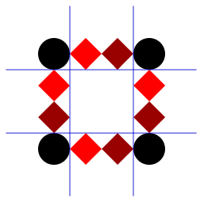

Again, we've already looked at borders a bit previously in the Learning Area — simple uses like setting border colors and styles. Here we'll provide a quick recap, then give you an idea of what else is available, such as rounded corners and border images.
| Prerequisites: | HTML basics (study Introduction to HTML), and an idea of How CSS works (study Introduction to CSS.) |
|---|---|
| Objective: | To learn the full story about styling element borders. |
Border recap
As you will have seen earlier on in the course, elements have a border that sits comfortably between the element's padding and margin. By default the border has a size of 0 — making it invisible — but you can set the thickness, style and color of the border to make it appear.
Border shorthand
The border shorthand property allows you to set all of these on all four sides at once, for example:
<p>I have a red border!</p>
p {
padding: 10px;
background: yellow;
border: 2px solid red;
}
Longhand options
border can be broken down into numerous different longhand properties for more specific styling needs:
border-top,border-right,border-bottom,border-left: Set the thickness, style and color of one side of the border.border-width,border-style,border-color: Set only the thickness, style, or color individually, but for all four sides of the border.- You can also set one of the three properties of a single side of the border individually, using
border-top-width,border-top-style,border-top-color, etc.
You might be wondering why there are so many longhand options — well, it is useful to have them available so that you can override or turn off individual bits of styling as necessary without having to constantly redefine everything; it can save you a lot of lines of code in the long run. It is also worth knowing that the border takes the color of the text by default, and a width of 3px, when no values are explicitly set.
With this in mind, let's look at an example of a writing progress planner for a fictional book. Each chapter is represented by a <div> element that is set to a fixed width and contains the chapter number and title. The writing progress is indicated by the following key:
- Not started/incomplete chapters are marked by a dotted border.
- Chapters that have been written but need reviewing are marked by a dashed border.
- Chapters that are complete (written and reviewed) are marked by a solid border.
- Chapters that are in the process of being written or reviewed are marked by a thick red solid bottom border.
Let's look at some CSS we could use to implement this:
<h1>Writing progress</h1> <div class="complete"> <p>Chapter 1: I was born</p> </div> <div class="complete"> <p>Chapter 2: School</p> </div> <div class="written review"> <p>Chapter 3: University</p> </div> <div class="written"> <p>Chapter 4: Rock and roll</p> </div> <div class="incomplete writing"> <p>Chapter 5: Fell in love</p> </div> <div class="incomplete"> <p>Chapter 6: Children</p> </div> <div class="incomplete"> <p>Chapter 7: Tired!</p> </div>
* {
box-sizing: border-box;
}
html {
font-family: sans-serif;
}
div {
width: 220px;
padding: 20px;
margin: 10px;
line-height: 2;
background-color: yellow;
text-align: center;
display: inline-block;
}
.complete {
border-style: solid;
}
.written {
border-style: dashed;
}
.incomplete {
border-style: dotted;
}
.writing, .review {
border-bottom: 6px solid red;
}
This gives us the following result:
There really isn't much styling used to accomplish this. We haven't declared any border styling on the div rule at all; just the specific classes we've used to convey the different points in the editorial process. We've relied on the default width and color for the borders, and just set the style for .complete, .written, and .incomplete. Then for chapters where .writing or .review is actively in progress, we've had to specify the entire set of properties just for the bottom border. This is way more efficient than having to set an entire border shorthand for every different box type.
You can find the example on Github as border-longhand.html (see also the source code).
Border radius
Rounded corners on boxes are another incredibly popular feature on web sites — so popular in fact that browsers implemented a property specifically for implementing rounded corners easily: border-radius. Previous to this (and to multiple background images being supported), developers used to have to wrap each box they wanted to have rounded corners in three additional <div>s, and attach a separate rounded corner graphic to each of these four elements. If they wanted their boxes to be flexible, that is.
Note: You might still have to do this if you need to have exactly the same look for older browsers — border-radius is supported in Internet Explorer 9 and above. But missing rounded corners are not going to stop users being able to read your content, so users of older browsers can probably live without them.
This is now a lot easier — you simply use the following property:
border-radius: 20px;
To put a different size of border radius on different corners, you can specify two, three or four values, rather like you can with padding and margin:
/* 1st value is top left and bottom right corners, 2nd value is top right and bottom left */ border-radius: 20px 10px; /* 1st value is top left corner, 2nd value is top right and bottom left, 3rd value is bottom right */ border-radius: 20px 10px 50px; /* top left, top right, bottom right, bottom left */ border-radius: 20px 10px 50px 0;
As a last point, you can also create elliptical corners (where the x radius is different to the y radius.) The two different radii are specified separated by a forward slash (/), and you can combine this with any combination of values, as indicated above. For example:
border-radius: 10px / 20px; border-radius: 10px 30px / 20px 40px;
Note: You can use any length units to specify border radii, e.g. pixels, rems, percentages.
Note: Longhand properties are also available, to set the border radius of each corner of the box individually: border-top-left-radius, border-top-right-radius, border-bottom-left-radius, and border-bottom-right-radius.
Active learning: Playing with border radius
For this active learning, we want you to implement some different types of border radius on the provided element. Try adding:
- The same rounded corner on every corner.
- The same elliptical corner on every corner.
- A different rounded and eliptical corner on every corner.
- Rounded corners to each corner using the three value syntax.
- A rounded corner to the bottom left corner.
- Rounded corners using different unit values, to see how they behave. Percentages are interesting — why?
If you make a mistake, you can always reset it using the Reset button.
Playable code
<div class="body-wrapper" style="font-family: 'Open Sans Light',Helvetica,Arial,sans-serif;">
<h2>HTML Input</h2>
<textarea id="code" class="html-input" style="width: 90%;height: 10em;padding: 10px;border: 1px solid #0095dd;"><div class="rounded">
<p>Rounded corners are groovy!</p>
</div>
</textarea>
<h2>CSS Input</h2>
<textarea id="code" class="css-input" style="width: 90%;height: 10em;padding: 10px;border: 1px solid #0095dd;">.rounded {
width: 220px;
padding: 20px;
margin: 10px;
line-height: 2;
background-color: yellow;
text-align: center;
border-style: dashed;
}</textarea>
<h2>Output</h2>
<div class="output" style="width: 90%;height: 15em;padding: 10px;border: 1px solid #0095dd;overflow:hidden;"></div>
<div class="controls">
<input id="reset" type="button" value="Reset" style="margin: 10px 10px 0 0;">
</div>
</div>
var htmlInput = document.querySelector(".html-input");
var cssInput = document.querySelector(".css-input");
var reset = document.getElementById("reset");
var htmlCode = htmlInput.value;
var cssCode = cssInput.value;
var output = document.querySelector(".output");
var styleElem = document.createElement('style');
var headElem = document.querySelector('head');
headElem.appendChild(styleElem);
function drawOutput() {
output.innerHTML = htmlInput.value;
styleElem.textContent = cssInput.value;
}
reset.addEventListener("click", function() {
htmlInput.value = htmlCode;
cssInput.value = cssCode;
drawOutput();
});
htmlInput.addEventListener("input", drawOutput);
cssInput.addEventListener("input", drawOutput);
window.addEventListener("load", drawOutput);
Border images
Finally, let's look at the most recent (and complex) addition to CSS for manipulating borders — border-image. The idea here is that sometimes creating a complex user interface feature will require a complex design for the border, not just a solid color. This could possibly be created by overlaying one element right in the center on top of another larger element, and applying a background image to the bottom element, faking a complex border. Or in extreme cases, you might even have to create a 3 x 3 grid of nine elements, with the center element as your content, and the surrounding eight elements having the border elements applied to them.
border-image images makes it a lot easier to achieve complex patterned borders, albeit in modern browsers (Internet Explorer 11+ supports it, as well as other modern browsers.) Let's have a look at how this works.
First of all, you need to have an image to apply to your browser. This will typically be a 3 x 3, 4 x 4, 5 x 5 (etc.) grid design, like the following:
When such an image is used for border image, the browser slices the image up into 8 pieces, as indicated by the next image:
The corner images will be inserted in the corners of your border, and the top, right, bottom and left slices will be used to fill up the corresponding sides of your border (by stretching, or repeating). We need to tell the browser to make the slices the right size — this image for example is 160px, and a 4 x 4 grid, so each slice will need to be 40px.
To start with, we need a box to apply the border to. This needs to have a border specified, otherwise the border image will have no space to appear in. We will also use background-clip to make any background color only fill the area under the content and padding, and not extend under the border as well (you may not want this for your design, but it is useful in cases like this).
border: 30px solid black; background-clip: padding-box;
Note: You should always include a border definition alongside any use of border-image — this acts as a fallback in case the border image can't be shown, for example if the browser doesn't support the feature.
Next, we'll use border-image-source to specify the source image to use as the border image. This works in exactly the same way as background-image, being able to accept a url() function or a gradient as a value.
border-image-source: url(border-image.png);
Now we'll use border-image-slice to set the required size of the slices, as described above:
border-image-slice: 40;
This property can take one value if all the slices are the same size, or multiple values if the slices need to be different sizes, in the same manner as padding and margin:
- Two values: top and bottom, left and right.
- Three values: Top, left and right, bottom.
- Four values: Top, right, bottom, left.
If the image is a raster graphic (like a .png or .jpg), then the number will be interpreted in terms of pixels. If the image is a vector graphic (like a .svg), then the number will be interpreted as coordinates in the graphic. Percentages can also be used (with the unit %). Check out the border-image-slice page for more options and details.
Note: By default, the ninth slice — the center piece — is omitted completely, and the element content appears in the gap that is left. If you want the center of the border image left in, you can do so by including the keyword fill in your border-image-slice/border-image value, in which case it will stretch to fit the background area.
Finally, we'll use border-image-repeat to specify how we want the images to fill up the border sides. The options are:
stretch: The default; the side images are stretched to fill the borders. This generally looks terrible and pixellated, so is not recommended.repeat: The side images are repeated until the borders are filled. Depending on circumstances, this might look ok, but you can get left with unsightly image fragments.round: The side images are repeated until the borders are filled, and they are all stretched slightly so that no fragments appear.space: The side images are repeated until the borders are filled, and a small amount of spacing is added between each copy such that no fragments appear. This value is only supported in Safari (9+) and Internet Explorer (11+).
We decided to go with the round value, as it seems to be the most useful and flexible:
border-image-repeat: round;
Putting this all together
Let's put all of this code together to show a working example. First, some simple HTML:
<div> <p>Border image</p> </div>
Now our CSS:
div {
width: 300px;
padding: 20px;
margin: 10px auto;
line-height: 3;
background-color: #f66;
text-align: center;
/* border-related properties */
border: 20px solid black;
background-clip: padding-box;
border-image-source: url(https://mdn.mozillademos.org/files/13060/border-image.png);
border-image-slice: 40;
border-image-repeat: round;
}
Here is the result:
Something interesting that you may have noticed is that the border has been set to 20px width, while the image slices are 40 — in this case, the browser just resizes the slices down to 20px wide so it fits.
You can find this example as border-image.html on Github (see also the source code). Make a local copy and have a play.
Other properties
Two less commonly used border image properties are as follows:
border-image-width: Resizes the border image only, not the border — if this is set smaller than theborder-width, it will sit against the outside of the border, not filling it. If it is larger, then it will expand beyond the border and start to overlap the padding/content.border-image-outset: Defines the size of an extra layer of space between the inside of the border and the padding — kind of like "border padding". This is an easy way to move the border-image out a bit if desired.
Shorthand
As you might expect, there is a shorthand property available, border-image, which allows you to set all of the related values on one line. The following lines:
border-image-source: url(border-image.png); border-image-slice: 40; border-image-repeat: round;
Can be replaced by this one:
border-image: url(border-image.png) 40 round;
Summary
Now you understand borders, right? Not the ones at the edges of your country, but the ones at the edges of your elements. Borders are useful to understand, and have many different uses. In the article that follows, we'll take a sideways step, and explore best practices for styling tables — this will show a useful application of some of the techniques we've looked at so far in the module.
In this module
- Box model recap
- Backgrounds
- Borders
- Styling tables
- Advanced box effects
- Creating fancy letterheaded paper
- A cool looking box